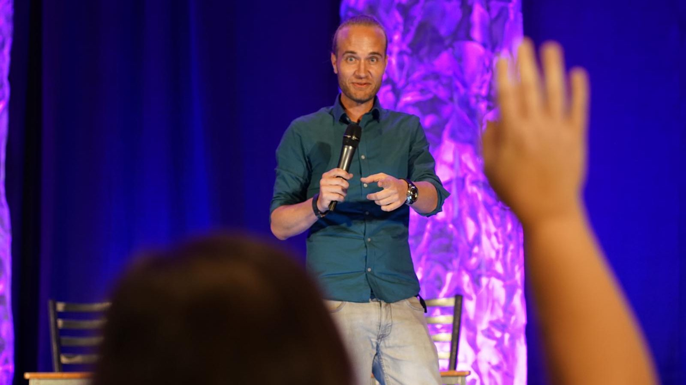
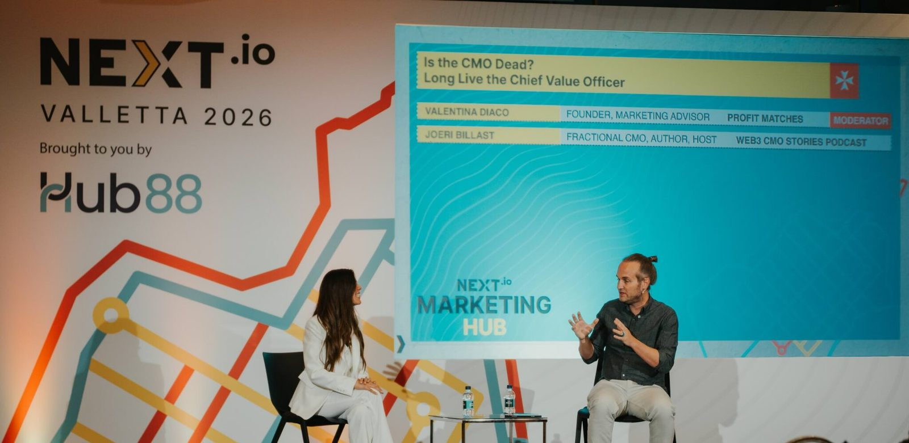

Keynote
The signature talk on why AI commoditized competence and why trust becomes marketing's new advantage. Thirty, forty-five or sixty minutes, tailored to the event theme and audience.
I speak to marketing leaders and executive teams about the one advantage artificial intelligence cannot generate for them. Ninety seconds of what that looks like on stage.
Speaker reel 2026. Featuring TEDxChiado (Lisbon), Marketing+ Conference (Cairo), NEXT Summit (Valletta) and DGT Innovation (Oeiras).
AI didn't just democratize competence, it commoditized it. So if you think about it, AI made it faster, but trust made it believable. The future CMO sees things differently. He sees trust as something that is not the output, but that is the input. It's so important that the trust is built beforehand, so that when something goes wrong, your audience, your customers give you the benefit of the doubt. In a world where everything can be generated, trust cannot.
The question is, what do you want to be trusted for when everything else can be generated?
Joeri's keynote on The CMO of the Future was insightful, inspiring, and perfectly timed for today's marketing leaders.
Joeri delivered an impactful keynote at DGTLX25. Energetic, insightful, and a perfect summary of where marketing and AI are heading.
Joeri brought such great energy to Worktugal. His talk on trust and AI really clicked with our audience. Smart, inspiring, and full of real-world insights.
AI did not just democratize competence. It commoditized it. Expertise can be generated, polish can be generated, and a confident answer costs nothing to produce. What cannot be generated is the reason someone believes you. This talk is about designing for that reason on purpose.
After this talk, marketing leaders can identify where AI makes their brand interchangeable, define the trust their brand needs to earn, and translate that into priorities for positioning, visibility and customer experience.
Great insights and very professional delivery.
Mark Schaefer, bestselling author of Marketing Rebellion, Known and Belonging to the Brand

The reel shows the range. This shows the thinking, uncut, in front of a live audience.
Conferences, leadership events and industry summits across Europe, the Middle East and North America.

Most speakers fill one gap in your programme. I can fill several, which usually makes the travel budget work harder for you.
The signature talk on why AI commoditized competence and why trust becomes marketing's new advantage. Thirty, forty-five or sixty minutes, tailored to the event theme and audience.
Hands-on sessions for marketing teams and leadership groups on AI, trust, positioning and AI visibility. Formats can run from ninety minutes to a half day.
Moderation with pace, structure and a clear narrative, particularly for Web3, AI and marketing conversations.
I host and record Web3 CMO Stories from conferences and events, including recordings at Web Summit. A live-audience format can be developed with the organizer.
Everything a programme lead usually has to email for, answered here instead.
For a quick answer, include the event date, city, audience, desired format and indicative budget.
Copy the bio that fits your format. High-resolution photography for programmes and press is linked below.
Joeri Billast is a Belgium-born, Portugal-based Fractional CMO, AI Visibility Strategist and author of The Future CMO, endorsed by Philip Kotler. He spoke at TEDxChiado in 2026 on why trust is the only thing AI cannot scale.
Joeri Billast is a Fractional CMO and AI Visibility Strategist who advises founders and executive teams on marketing leadership in AI-driven markets. He is the author of The Future CMO, endorsed by Philip Kotler, and of The 5K Challenge for Solopreneurs, and a contributing author to books by Mark Schaefer and Joe Pulizzi. He hosts Web3 CMO Stories, a podcast in the top five percent globally with more than 280 episodes. Belgium-born and based in Portugal, he has spoken at TEDxChiado, Marketing+ Conference in Cairo, NEXT Summit in Valletta and BAM Marketing Congress in Brussels, in English, Dutch and French.
Joeri Billast is a Fractional CMO and AI Visibility Strategist. He works with founders and executive teams on brand positioning and marketing leadership in markets where artificial intelligence increasingly mediates how customers find, evaluate and choose brands.
He is the author of The Future CMO, endorsed by Philip Kotler, and of The 5K Challenge for Solopreneurs, and a contributing author to The Most Amazing Marketing Book Ever by Mark Schaefer and The Content Entrepreneur by Joe Pulizzi. He hosts Web3 CMO Stories, a podcast in the top five percent globally with more than 280 episodes and guests including Gary Vaynerchuk and Chris Do. He also created Sintra Synergies, a curated marketing and AI retreat in Portugal.
On stage his argument is consistent: artificial intelligence has commoditized competence, which makes trust the scarce resource and the only advantage that cannot be generated. He spoke at TEDxChiado in Lisbon in 2026, and has appeared at Marketing+ Conference in Cairo, NEXT Summit in Valletta, DGT Innovation in Oeiras and BAM Marketing Congress in Brussels. Belgium-born and based in Portugal, he speaks in English, Dutch and French.
For a quick answer, include the event date, city, audience, desired format and indicative budget.
Marketing leadership in the age of artificial intelligence. His signature keynote argues that AI has commoditized competence, which makes trust the scarce resource and the real differentiator. It covers how the CMO role shifts from campaign manager to trust architect, what happens when AI misrepresents a brand, and how organizations stay legible and citable in AI-mediated markets.
Keynotes run 30, 45 or 60 minutes depending on the programme. Workshops and masterclasses run from 90 minutes to a half day. Panel moderation, fireside chats and event podcast recordings are scheduled by programme.
Keynotes in English, Dutch and French. German and Portuguese for conversational settings such as panels, interviews and informal discussions.
Joeri Billast is Belgium-born and based in Lisbon, Portugal. He is available internationally, and travel and accommodation for events outside Lisbon are agreed in advance. Past stages include Lisbon, Brussels, Cairo, Valletta, Toronto, Berlin, Dubai and Porto.
Yes. He moderates panels, particularly on Web3, AI and marketing, and hosts and records the Web3 CMO Stories podcast from conferences and events. A live-audience recording format can be developed with the organizer.
Send the event date, city, audience, desired format and indicative budget through the contact form on joeribillast.com. Fees are scoped according to format, location and preparation, and Joeri takes paid engagements only.
{kind=link}
{kind=link}
{kind=link}